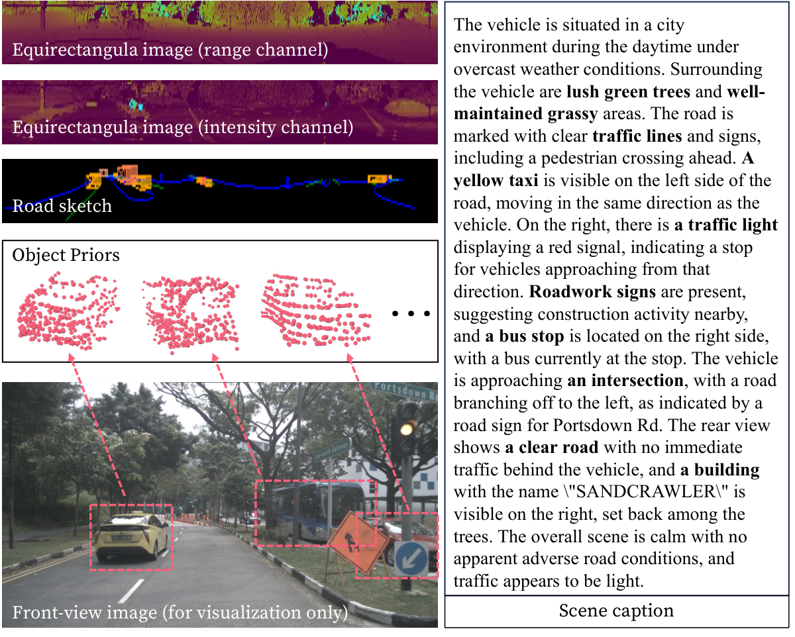
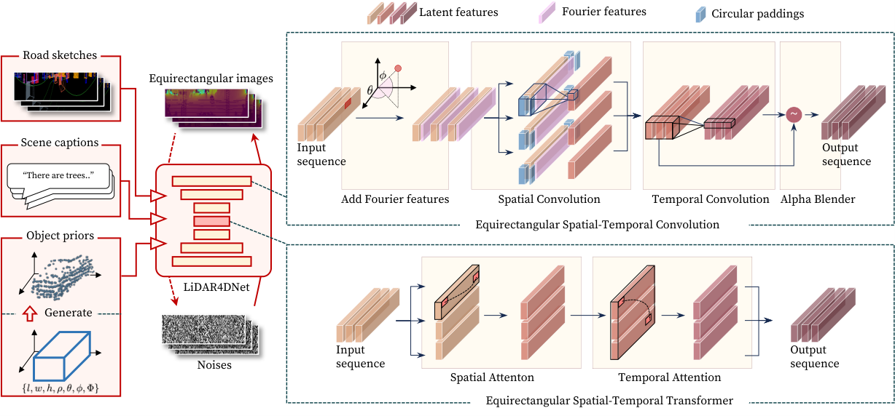
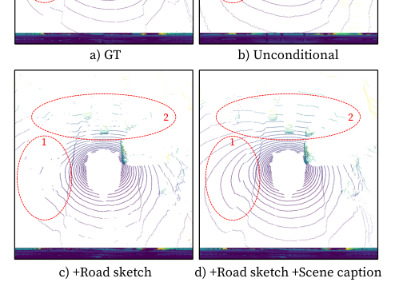
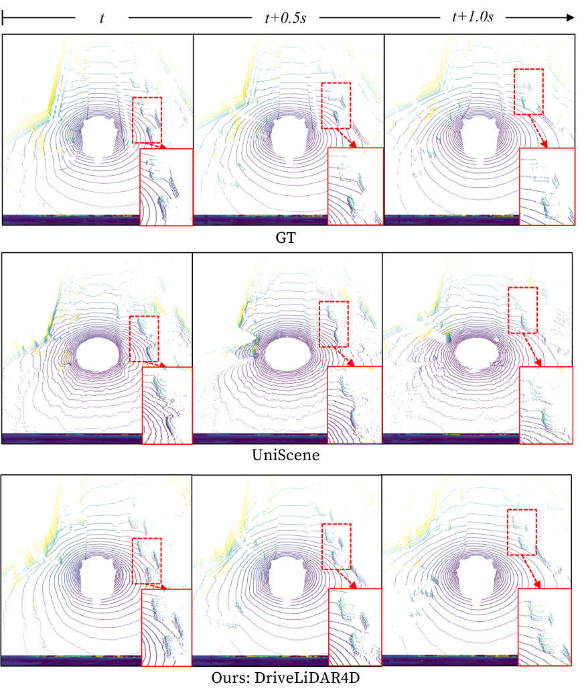
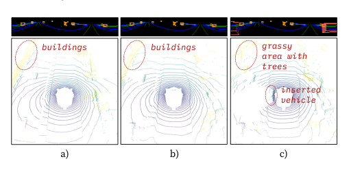

DriveLiDAR4D
简单摘要
尽管最近的 3D LiDAR 点云生成方法已经显示出显着的改进，但它们仍然面临着显着的局限性。在本文中，我们介绍了一种由多模态条件和新颖的顺序噪声预测模型组成的新型激光雷达生成管道。

为了缓解这个问题，LidarDM 建议通过单独建模静态场景和动态对象来生成 LiDAR 序列。然而，它缺乏背景控制，并且其两阶段合成策略可能会损害所得点云分布的真实性和连贯性。
核心创新
第一，在本文中，我们介绍了一种由多模态条件和新颖的序列噪声预测模型组成的新型激光雷达生成管道。
第二，据我们所知，这是第一个以端到端方式解决具有完整场景操纵能力的激光雷达场景顺序生成的工作。
第三，在训练过程中，我们首先推导三个多模态条件。
技术细节
通过将等距矩形时空扩散模型与多模态调节能力相结合来解决上述限制的框架。在训练过程中，我们首先推导三个多模态条件。在推理过程中，LiDAR4DNet 再次利用三个多模态条件重建等距柱状图像序列。


$$ q(\boldsymbol{x}_t|\boldsymbol{x}) = \mathcal{N} (\alpha_t\boldsymbol{x}, \sigma^2_t \boldsymbol{I}), $$
这条公式定义了论文中的一个核心计算关系。阅读时可以先确认左侧要得到的结果，再看右侧由 q、boldsymbol、x、t 如何共同构成这个结果。
$$ q(\boldsymbol{x}_t|\boldsymbol{x}_s)= \mathcal{N} (\alpha_{t|s}\boldsymbol{x}_s, \sigma^2_{t|s} \boldsymbol{I}), $$
这条公式定义了论文中的一个核心计算关系。阅读时可以先确认左侧要得到的结果，再看右侧由 q、boldsymbol、x、t 如何共同构成这个结果。
$$ p(\boldsymbol{x}_s|\boldsymbol{x}_t) = \mathcal{N}(\boldsymbol{\mu}_t(\boldsymbol{x}, \boldsymbol{x}_t), \Sigma^2_t\boldsymbol{I}), $$
这条公式定义了论文中的一个核心计算关系。阅读时可以先确认左侧要得到的结果，再看右侧由 p、boldsymbol、x、s 如何共同构成这个结果。
$$ \mathcal{L} = \mathbb{E}_{\boldsymbol{x}, \boldsymbol{\epsilon} \sim \mathcal{N}(\mathbf{0}, \mathbf{I}, t)} \left [ \| \boldsymbol{\epsilon} - \hat{\boldsymbol{\epsilon}}(\boldsymbol{x}_t, t, \boldsymbol{c}) \| ^2 \right ], $$
这条公式定义了论文中的一个核心计算关系。阅读时可以先确认左侧要得到的结果，再看右侧由 L、mathbb、E、boldsymbol 如何共同构成这个结果。
实验结论
实验部分首先关心的是：显然，道路草图条件的影响尤其显着，与无条件生成相比，FRD 提高了 15.34%（从 210.55 到 178.24），MMD 提高了 53.80%（从 1.84 到 0.85）。
对比结果表明，Fig 显示了在 nuScenes val split 上不同条件下生成的 LiDAR 场景的定性比较。进一步结合定性现象和消融分析，可以看出：可以看出，\ 比 LidarDM 和 UniScene 实现了更低的 FRD、MMD 和 JSD 分数，这表明生成的场景的空间保真度和多样性有所提高。
| mAP | GT Agg.^1 | |
|---|---|---|
| GT | 0.804 | 100.0% |
| UniScene | 0.078 | 9.7% |
| LidarDM | 0.140 | 17.4% |
| color_ours \ w.o. object priors | 0.123 | 15.3% |
| color_ours \ | 0.407 | 50.6% |
| 1: GT Agg. denotes aggrements with mAP of GT. | ||
| Venues | KITTI-360 | nuScenes | |||||
|---|---|---|---|---|---|---|---|
| FRD | MMD^1 | JSD | FRD | MMD^1 | JSD | ||
| LiDARGen | ECCV2022 | 2040.1 | 3.87 | 0.067 | - | 19.00 | 0.160 |
| R2DM^2 | ICRA2024 | 275.67 | 5.55 | 0.049 | - | - | - |
| Text2LiDAR^2 | ECCV2024 | 831.64 | 4.36 | 0.044 | - | - | - |
| RangeLDM^2 | ECCV2024 | 2022.71 | 0.75 | 0.035 | 492.49 | 2.75 | 0.054 |
| color_ours | 244.25 | 3.31 | 0.042 | 210.55 | 1.84 | 0.045 | |
| 1: MMD has been multiplied by \(10^4.\) | |||||||
| 2: We reproduced the results with their released source codes. | |||||||



4.1 实验设置
实验部分首先关心的是：我们在两个现实世界自动驾驶数据集 KITTI-360 和 nuScenes 数据集上验证了 \ 的有效性。
对比结果表明，KITTI-360 数据集采用具有 64 个光束和 360 度水平 FOV 的 Velodyne-64E LiDAR。进一步结合定性现象和消融分析，可以看出：根据现有的工作，我们指定序列 0 和 1 作为测试集（26367 帧），并利用剩余序列作为训练集（50348 帧）。
4.2 无条件 LiDAR 场景生成
实验部分首先关心的是：我们将 \ 与 SOTA LiDAR 场景生成方法 LiDARGen 、 R2DM 、 Text2LiDAR 和 RangeLDM 进行比较。
对比结果表明，可以看出， \ 在 KITTI-360 数据集上实现了与 RangeLDM 相当的生成质量，具有优越的 FRD 和稍逊色的 MMD 和 JSD。进一步结合定性现象和消融分析，可以看出：然而，\ 在 nuScenes 数据集上的所有三个指标（FRD、MMD 和 JSD）上都超过了 RangeLDM。
4.3 有条件的 LiDAR 场景生成
实验部分首先关心的是：tab 在 nuScenes val 分割上呈现不同条件下的结果。
对比结果表明，显然，道路草图条件的影响尤其显着，与无条件生成相比，FRD 提高了 15.34%（从 210.55 到 178.24），MMD 提高了 53.80%（从 1.84 到 0.85）。进一步结合定性现象和消融分析，可以看出：Fig 显示了在 nuScenes val split 上不同条件下生成的 LiDAR 场景的定性比较。
4.4 顺序且可控的 LiDAR 场景生成
实验部分首先关心的是：我们将 \ 与 SOTA 顺序 LiDAR 生成方法 LidarDM 和 UniScene 进行比较。
对比结果表明，UniScene 是一种联合 RGB-LiDAR 生成方法，我们评估其生成的 LiDAR 场景的质量。进一步结合定性现象和消融分析，可以看出：FVD 度量是使用所有生成序列的前 5 帧计算的，以确保公平比较。
4.5 模型配置的影响
实验部分首先关心的是：我们通过评估以下模型配置来研究 EST-Conv 和 EST-Trans 的影响。
对比结果表明，配置 A 指的是我们删除 \ 中的 EST-Trans 并用常规 2D 卷积块替换 EST-Conv 的模型。进一步结合定性现象和消融分析，可以看出：通过比较 tab 中的配置 A 和配置 B，很明显，EST-Conv 对于增强生成的 LiDAR 场景的时间一致性至关重要。
4.6 真实世界 3D 物体检测评估
实验主要验证：物体定位的准确性和物体点的保真度在现实自动驾驶场景中至关重要，因为这些因素显着影响感知系统的性能。结果上，选项卡显示了在 nuScenes val split 上通过不同方法生成的 LiDAR 场景中的汽车 3D 对象检测结果。
理解评价
如果把这篇论文放回问题背景里看，它真正的价值在于：尽管最近的 3D LiDAR 点云生成方法已经显示出显着的改进，但它们仍然面临着显着的局限性，包括缺乏顺序生成功能以及无法生成精确定位的前景物体。这说明作者不是只补一个局部模块，而是在重新组织问题该怎样被解决。
最能支撑这个判断的，还是实验给出的证据：在本文中，我们介绍了一种新颖的 LiDAR 生成管道，由多模态条件和新颖的顺序噪声预测模型组成，能够生成具有高度可控前景物体和现实的时间一致的 LiDAR 场景。换句话说，这些设计并不只是概念上更完整，而是实实在在改变了最终结果。
当然，它离真正成熟的方案还有距离：当前方案仍然受制于计算资源、输入质量或场景复杂度，距离真正稳健的大规模部署还有差距。后续更值得继续推进的方向，是 同时提升效率、泛化能力以及在更复杂场景下的稳定性。